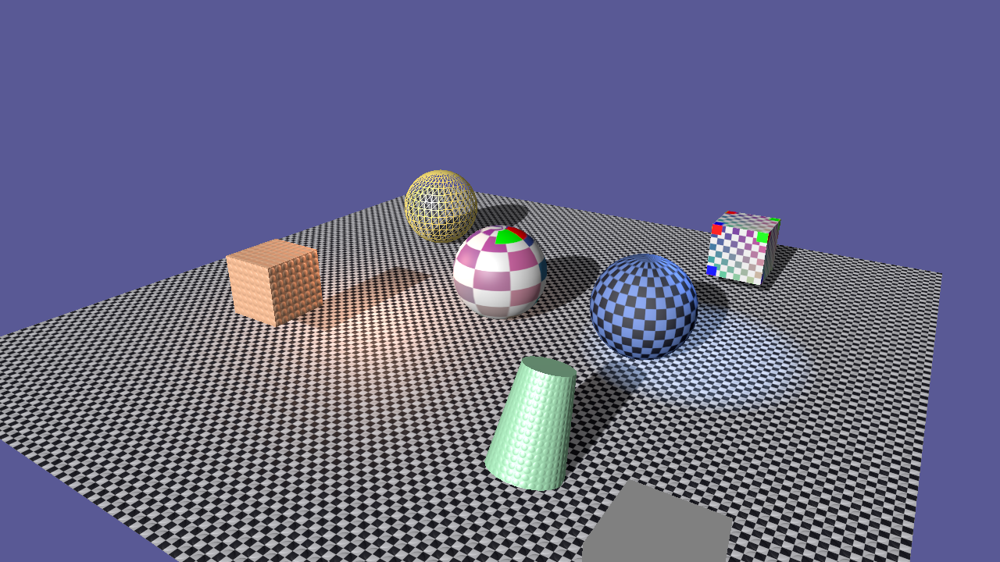

11-D단계 · 게임 빌드와 런타임 분리
상용 엔진의 "Package Project" 입니다. 에디터의 File > Build Game... 이 Build\<이름>\ 에 게임 런타임 exe · DLL · 셰이더 · 에셋을 모아 넣고 시작 씬을 적어 주므로, 폴더를 통째로 다른 PC 에 복사해 exe 를 더블클릭하면 게임이 뜹니다. 그러기 위해 하나였던 프로젝트를 엔진 정적 라이브러리 · 에디터 exe · 게임 exe 셋으로 나눴고, 게임 exe 는 ImGui 컨텍스트 없이 백버퍼에 직접 그립니다.
게임 로직(스크립트)은 이미 엔진과 함께 컴파일되고 에셋은 파일이므로, "빌드" 는 런타임 모드 하나(GameApp: 에디터 UI 없이 시작 씬을 로드해 BeginPlay)와 복사(GameBuilder)로 끝납니다. 프로젝트 분리의 유일한 함정은 정적 라이브러리에서 스크립트의 정적 등록 .obj 가 링크에서 빠지는 것이고, /WHOLEARCHIVE 한 줄로 막습니다.
1.요약
| 항목 | 구현 | 확인 |
|---|---|---|
| 프로젝트 분리 | SherlockEngine.vcxproj → StaticLibrary(엔진 전부 + Game/ + 셰이더 컴파일 + Assets 복사), SherlockEditor(TestApp·Editor·ContentBrowser·ScriptCreator·GameBuilder·DebugUI + EditorMain), SherlockGame(GameMain). 두 exe 는 ProjectReference + /WHOLEARCHIVE:SherlockEngine.lib | 세 프로젝트 Debug·Release 빌드 경고 0 |
| 게임 런타임 | App/GameApp: WantsGUI() = false(ImGui 컨텍스트·백엔드 생략), [game] startScene 로드 → Scene::BeginPlay, 매 프레임 Update/FixedUpdate, ESC 종료, 창 제목 [game] title | 그림 1 (백버퍼 직접 렌더링, 활성 카메라 Main Camera) |
| Build Game | File > Build Game...: 이름·시작 씬(Assets\Scenes\*.json)·에셋 전부/참조만·Release 빌드(vswhere → MSBuild)·폴더 열기. App/GameBuilder 가 Build\<이름>\ 에 exe·DLL·Shaders·Assets 복사 + engine.ini 에 [game] 추가 | 자동 검증 --build-game (5절), 그림 2 |
| AppBase | WantsGUI / GetWindowTitle 가상 함수, COM 초기화(CoInitializeEx), 콘솔 창 없음(11-C) | 게임 exe 에서 WIC 텍스처·PNG 스크린샷 동작 |
2.세 프로젝트: lib · Editor · Game
SherlockEngine.sln
├─ SherlockEngine\SherlockEngine.vcxproj StaticLibrary → x64\<구성>\SherlockEngine.lib
│ Core · Graphics · RHI · Scene · Game(Components·Scripts) · App\AppBase · App\GameApp · Shaders(fxc) · Assets 복사
├─ SherlockEditor\SherlockEditor.vcxproj Application → SherlockEditor.exe
│ EditorMain.cpp + ..\SherlockEngine\App\{TestApp, Editor, ContentBrowser, ScriptCreator, GameBuilder, DebugUI}
└─ SherlockGame\SherlockGame.vcxproj Application → SherlockGame.exe
GameMain.cpp (GameApp 는 lib 에)2.1 정적 라이브러리와 /WHOLEARCHIVE
스크립트와 컴포넌트는 SHERLOCK_SCRIPT·SHERLOCK_BEHAVIOUR 매크로가 만든 정적 객체의 생성자에서 레지스트리에 등록됩니다(11-C 3.2절). 정적 라이브러리에서 링커는 참조되는 심볼이 있는 .obj 만 가져오므로, 아무도 이름으로 참조하지 않는 Rotator.obj 같은 파일은 빠지고 등록도 사라집니다 — 11-C 문서가 예고한 그 함정입니다. 두 exe 프로젝트의 링커 옵션 /WHOLEARCHIVE:SherlockEngine.lib 이 라이브러리의 모든 .obj 를 넣게 해 등록이 살아남습니다. 엔진은 어차피 전부 쓰이므로 크기 손해도 없습니다. 검증: 에디터 자동 검증에서 components=[Rigidbody,PlayerController], [Rotator] 가 그대로 보입니다.
2.2 같은 OutDir, 하나의 pch, 파일은 제자리
- 세 프로젝트의 OutDir 은 기본값 그대로
$(SolutionDir)x64\<구성>\하나입니다. 그래서 라이브러리 프로젝트의 fxc 셰이더 컴파일과Shaders\·Assets\복사 타깃이 한 번만 돌고, 두 exe 가 그 결과를 같이 씁니다. vcpkg 의 DLL 배치(DirectXTex.dll)는 exe 프로젝트마다 이루어집니다. - 에디터 소스 파일은
SherlockEngine\App\에 그대로 두고 에디터 프로젝트가..\SherlockEngine\App\Editor.cpp로 참조합니다. include 경로는 세 프로젝트 모두$(SolutionDir)SherlockEngine이라#include "App/Editor.h"가 그대로입니다. 문서·스크립트 생성기(ScriptCreator가SherlockEngine.vcxproj에 등록)도 손댈 것이 없습니다. - pch 는 프로젝트마다 자기 것을 만듭니다: exe 프로젝트가
..\SherlockEngine\pch.cpp를 Create 로 포함합니다. - 에디터의 디버그 시작 폴더를
$(SolutionDir)SherlockEngine으로 두어(vcxproj 안) 추적 중인imgui.ini를 그대로 씁니다. VS 에서는 SherlockEditor 를 시작 프로젝트로 지정합니다.
3.게임 런타임 GameApp
// AppBase — 앱이 GUI 를 원하지 않으면 ImGui 컨텍스트를 만들지 않는다 → Engine::Initialize 가 렌더러 백엔드도 건너뛴다 (GetCurrentContext 검사, 10단계)
virtual bool WantsGUI() const { return true; }
if (WantsGUI() && !InitGUI()) …; if (gui) { ImGui_ImplWin32_NewFrame(); ImGui::NewFrame(); … OnGUI(); ImGui::Render(); }
// GameApp::OnInitialize — 시작 씬 로드 후 바로 재생. 씬 뷰 텍스처를 요청하지 않으므로 메인 패스는 백버퍼에 (11단계 IsOffscreen false 경로)
path = Paths::GetAssetPath(L"Scenes\\" + config["game.startScene"]);
SceneSerializer::Load(scene, camera, assets, path);
scene.BeginPlay(&input, &camera); // 카메라 오브젝트가 있으면 첫 Update 에서 그 시점 (11-C ApplyActiveCamera)
OnUpdate: scene.Update(dt); ESC → PostQuitMessage. OnFixedUpdate: scene.FixedUpdate(fixedDt);11-C 의 재생 루프가 그대로이고 스냅샷·Stop 만 없습니다. 게임 exe 도 --exit-after / --screenshot / --dump-objects 를 받아 창 없이 검증할 수 있습니다. ImGui 라이브러리 자체는 엔진 lib 의 Device 백엔드 코드가 참조하므로 링크되지만, 컨텍스트가 없어 아무것도 실행되지 않습니다(완전히 떼는 것은 8절).
4.Build Game: 패키징
Build\<이름>\
├─ SherlockGame.exe x64\Debug (에디터 옆) 또는 Release 빌드를 켰으면 x64\Release
├─ DirectXTex.dll 런타임 폴더의 *.dll
├─ Shaders\ *.cso *.hlsl cso 우선, 없으면 런타임 컴파일 폴백 (4단계 규칙 그대로)
└─ Assets\ Config · Scenes · Textures · Models (전부, 또는 시작 씬이 참조하는 것만)
Config\engine.ini ← 끝에 [game] startScene = …, title = <이름> 을 덧붙인다 (같은 키는 마지막 값이 이긴다)- 참조만 복사: 시작 씬 JSON 의
meshes[].path에서 모델 폴더(Models\DamagedHelmet)를, 재질의albedoTexture/normalTexture에서 텍스처를 모읍니다. 데모 재질이 쓰는bumps_normal.png처럼 이름만 있는 파일에 대비해Textures\는 전체를 넣습니다. Sponza(수십 MB)를 빼는 용도입니다. - Release 빌드:
vswhere -latest -find MSBuild\**\Bin\MSBuild.exe→MSBuild SherlockEngine.sln /t:SherlockGame /p:Configuration=Release를 창 없이 동기로 돌리고Build\msbuild.log에 출력을 남깁니다. 에디터는 그동안 멈춥니다(수십 초). - 패키지 안에는 소스 트리가 없으므로
Paths의 폴백이 전부 exe 옆 사본으로 갑니다 — 10·11-B 에서 이미 그렇게 설계된 경로가 처음으로 실제로 쓰였습니다. 로그는Build\<이름>\Logs\에 남습니다.
5.자동 검증
# 에디터 (스크립트 등록이 /WHOLEARCHIVE 로 살아 있나)
SherlockEditor.exe --scene=demo --exit-after=30 --play=1 --dump-objects=1
# 게임 런타임 단독 (x64\Debug, engine.ini 의 [game] startScene = demo_components.json)
SherlockGame.exe --exit-after=90 --dump-objects=1 --screenshot=...phase11d-game.png
# 패키징 (File > Build Game 과 같은 경로, 에셋 전부, 폴더 열지 않음) → Build\TestBuild\
SherlockEditor.exe --scene=demo --exit-after=20 --build-game=TestBuild [--build-scene=floor_cube.json]
# 패키지 실행 (소스 트리 없음)
Build\TestBuild\SherlockGame.exe --exit-after=90 --dump-objects=1 --screenshot=...phase11d-packaged.png6.함정과 해결
- COM 초기화. 게임 exe 의 첫 실행에서 PNG 텍스처 로드와 스크린샷 저장이
0x80004002 (E_NOINTERFACE)로 실패했다. DirectXTex 의 WIC 팩토리는 COM 이 필요한데, 에디터에서는 ImGui 쪽 초기화 과정에서 우연히 COM 이 열려 있어 드러나지 않았다.AppBase::Initialize맨 앞에CoInitializeEx(COINIT_MULTITHREADED), 소멸자에CoUninitialize. - 정적 초기화 탈락. 2.1절.
/WHOLEARCHIVE. 이름으로만 접근하는 것(스크립트)이 정적 라이브러리에서 사라지는 전형적 함정. - 솔루션 탐색기가 평평해짐. 11-C 에서
.filters를 여러 번 손으로 고치다 항목이 빠져 VS 에서 전부 루트에 보였다..vcxproj항목에서.filters를 생성하는 스크립트로 통일했고(필터 = 실제 폴더), 새 프로젝트의 filters 도 같은 방식으로 만들었다. - 이름 변경. 실행 파일이
SherlockEngine.exe에서SherlockEditor.exe가 됐다. 이전 단계 문서의 명령은 이름만 바꿔 읽으면 된다. 옛 exe 는 빌드 폴더에 남아 있었으므로 지웠다. - engine.ini 의 [game] 키 중복. Build 는 원본 ini 를 복사한 뒤 끝에
[game]을 덧붙인다.Config는 키 → 값 맵이라 마지막 값이 이겨, 개발용 시작 씬과 패키지의 시작 씬이 자연히 분리된다.
7.검증과 스크린샷
- 완료 기준 "Build 폴더의 exe 가 소스 트리 없이 실행된다" —
--build-game=TestBuild: 86 파일, 0.3 초.Build\TestBuild\SherlockGame.exe가 자기 옆의 engine.ini(16 항목)·셰이더 .cso·씬을 읽어 "게임 시작: … 오브젝트 9, 컴포넌트 5, 카메라 Main Camera", CubeStatic 이 Rigidbody 로 y = 2.60 까지 상승, 스크린샷 저장 (그림 2). - 런타임 단독(x64\Debug): 텍스처 로드 정상, 활성 카메라 Main Camera, 90 프레임 뒤 종료 (그림 1). D3D12 Release 도 같다.
- 에디터: 스크립트 등록 유지 (
[Rigidbody,PlayerController],[Rotator]), 재생·스냅샷 복원 그대로. 세 프로젝트 Debug·Release 빌드 경고 0, 오류 0.

8.다음 단계
- ImGui 를 게임 exe 에서 완전히 떼기. Device 백엔드의 ImGui 코드를
#ifdef SHERLOCK_EDITOR로 나누면 게임 exe 가 imgui.lib 를 링크하지 않는다. 지금은 링크만 되고 실행되지 않는다. - 에셋 쿠킹. 텍스처를 DDS(BC 압축)로, glTF 를 미리 파싱한 바이너리로. Sponza 로딩(수 초)이 문제가 될 때.
- 비동기 빌드. MSBuild 를 스레드에서 돌리고 진행 상황을 팝업에 표시.
- 전체화면·해상도·입력 재매핑, 메인 메뉴 씬 전환 — 게임 쪽 기능. 씬 전환 API(
Scene::LoadScene(name))가 첫 항목.
9.참고 문헌
- Microsoft Learn, /WHOLEARCHIVE (Include All Library Object Files). learn.microsoft.com/…/wholearchive-include-all-library-object-files
- Microsoft Learn, CoInitializeEx — WIC 등 COM 컴포넌트 사용 전 스레드별 초기화. learn.microsoft.com/…/nf-combaseapi-coinitializeex
- Microsoft, vswhere — 설치된 Visual Studio / MSBuild 찾기. github.com/microsoft/vswhere
- Microsoft Learn, ProjectReference / static library linking in MSBuild. learn.microsoft.com/…/vcxproj-file-structure